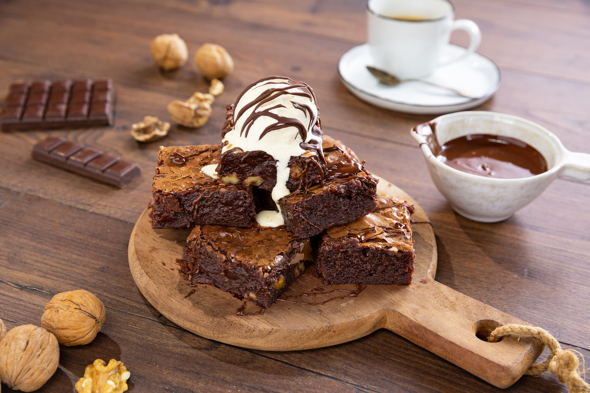

Inicio
BROWNIES DE CHOCOLATE

Hoy vamos a preparar una receta típica americana, un brownie de chocolate. El brownie es un bizcocho compacto y dulce de color marrón (de ahí su nombre de «brownie»). Hay muchos tipos de brownies ahora por la red pero yo voy a preparar la receta americana, el brownie de chocolate con nueces.
Como he comentado antes, se puede preparar el brownie de mil maneras, con chocolate blanco, con chocolate con leche o incluso lo he llegado a ver de calabaza. Lo mejor es prepararlo con la receta tradicional americana, con chocolate negro.
INGREDIENTES
- 200 gramos de chocolate negro
- 110 gramos de mantequilla
- 4 huevos
- 120 gramos de azúcar
- 1 cucharada de esencia de vainilla
- 85 gramos de harina
- bicarbonato
- Nueces
- Pepitas de chocolate
INSTRUCCIONES
- En un bol ponemos el chocolate y la mantequilla. Lo metemos al microondas a temperatura media para que se vaya derritiendo. Una vez derretido lo lo mezclamos muy bien
- Ponemos los 4 huevos y el azúcar en un bol
- Agregamos la harina y la cucharadita de bicarbonato. Mezclamos muy bien
- Agregamos el chocolate que hemos derretido junto con la mantequilla y el toque de vainilla. Seguimos mezclando
- Agregamos las nueces y las pepitas de chocolate
- En un recipiente de horno ponemos un poco de mantequilla y harina para que no se nos pegue el brownie
- Incorporamos la mezcla y cubrimos con unas pepitas y unas nueces (opcional). Introducimos al horno durante 30-35 minutos a 180º